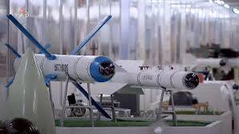

Mãn nhãn góc quay bên trong buồng lái của phi công tiêm kích lần đầu tiên thả bẫy nhiệt trên bầu trời TP Hồ Chí Minh.
Vũ khí Triều Tiên Trang bị trên tàu
Ngoài tên lửa hành trình và tên lửa đạn đạo, tàu chiến mới của Triều Tiên còn trang bị tên lửa chống tăng ngoài tầm nhìn. Tên lửa sẽ là giải pháp hiệu quả trước thuyền không người lái. Ngoài ra sân đáp máy bay của tàu có lẽ sử dụng cho máy bay không người lái. Có thể thấy tàu trang bị khá toàn diện.


KHÔNG BIẾT NGÀY ẤY CÓ NƯỚC NÀO QUAN NGẠI KHÔNG NHỈ?
Thông qua ghi chép của người Phương Tây, chúng ta đã biết về một buổi tập luyện của quân đội các chúa. Thế nhưng đó không phải ấn tượng duy nhất của họ. Dù không phải là người đam mê hay yêu thích quân sự, chúng ta đều đã được nghe hay được xem một cuộc duyệt binh. Đây là cách nhanh nhất để các cường quốc quân sự khè lẫn nhau hoặc là đưa ra thông điệp cứng rắn.
Có thể các bạn chưa biết, ngay từ thời Trịnh Nguyễn, các cụ khi không có chiến sự vẫn có cách để khè lẫn nhau thông qua nghi thức tế cờ. Điều này đã gây ấn tượng mạnh cho người Phương Tây. Samuel Baron là một thương nhân mang trong mình hai dòng máu Việt - Hà Lan, làm việc cho công ty Đông Ấn Anh (EIC). Ông ta thuộc thế hệ những thương nhân, chính khách, giáo sĩ phương Tây đầu tiên đến Đại Việt vào thế kỷ 17 - 18 và để lại nhiều ghi chép về văn hóa - lịch sử quan trọng. Trong đó có quyển "Mô tả vương quốc Đàng Ngoài" có mô tả về lễ “Theckydaw (Tế kỳ đảo)” - lễ tế cờ thời Lê Trịnh thế kỷ 17 như sau: “Số lượng quân sĩ xuất hiện trong dịp này không dưới 80.000 người, kỷ luật cao, được huấn luyện tinh nhuệ về đao kiếm, giáo, súng… Đội kỵ binh vào khoảng 5.000 quân, binh khí phong phú với cung tên, kiếm và súng. Đội tượng binh gồm khoảng 250 chiến tượng được huấn luyện rất tốt, không biết sợ lửa và tiếng gầm của đại bác, bành trên lưng được sơn màu rất đẹp và có hai người ngồi điều khiển, mang theo súng hỏa mai và giáo. Số lượng trọng pháo không dưới 300 khẩu được sắp đặt chỉnh tề. Các quan lại, tướng lĩnh và người trong hoàng tộc ăn mặc sang trọng, khoác những bộ cánh làm bằng vải mịn màu đỏ thắm, đeo bài ngà vàng trước ngực (như cách người Âu chúng ta mang vòng), đội mũ làm bằng loại vải nói ở trên… làm cho phần trình diễn này trong buổi lễ thật ấn tượng. Đội vệ quân của Chúa trông thật vạm vỡ, nhiều kẻ cao đặc biệt, mang trang phục mũ áo tề chỉnh có cùng chất liệu với các quan, chỉ khác là chúng không đeo thẻ ngà. Mười chú ngựa quý và sáu con voi to của Chúa được trang điểm thêm với vàng và vải màu đỏ thắm, nổi trội hẳn so với phần còn lại. Ngoài ra còn có nhiều loại cờ quạt biển hiệu đủ màu sắc sặc sỡ, kèn, chiêng, trống giục xung trận… trông thật bắt mắt.” Well các bạn đã có câu trả lời cho việc tại sao nội chiến, mà không ai dám va rồi đấy.